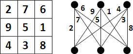

Labeling
程度★ 難度★
Labeling
替一張圖的各個元件標記數值或者符號。一張圖的標記情形，稱做一種「標號」。
根據元件的不同，標號可分為許多種類型，例如點標號（vertex labeling）、邊標號（edge labeling）。
Magic Labeling
程度★ 難度★
Magic Labeling
用1 2 3 ...的數字分別標記每一條邊，讓每一個點接觸的數字和為定值。
Kn,n有Magic Labeling（n≠2）。 一張二分圖如果可以拆成兩個Hamilton Cycle，則有Magic Labeling。 一張圖如果可以拆成兩個部分，兩個都有Magic Labeling，且其中一個是regular，則有Magic Labeling。
幻方（magic square）可以等價轉換成Kn,n，所以邊長大於二的幻方一定都有Magic Labeling。
Antimagic Labeling
用1 2 3 ...的數字分別標記每一條邊，讓每一個點接觸的數字和皆相異。
尚未證實：K2以外的連通圖皆有Antimagic Labeling。 尚未證實：K2以外的樹皆有Antimagic Labeling。
Graceful Labeling
程度★ 難度★
Graceful Labeling
用1 2 3 ...的數字分別標記每一條邊，1 2 3 ...的數字分別標記每一個點，讓每一條邊等於其兩端點的差值。
尚未證實：所有樹皆有Graceful Labeling。
Consecutive Labeling
用1 2 3 ...的數字分別標記每一條邊與每一個點，讓每一條邊等於其兩端點的差值。
每一種Graceful Labeling皆可等價調整成一種Consecutive Labeling。但是反過來不見得行。
尚未證實：所有樹皆有Consecutive Labeling。
Conservative Labeling
程度★ 難度★
Conservative Labeling
無向圖上，用1 2 3 ...的數字分別標記每一條邊，並且設定方向（即是Orientation的概念），讓每個點的流入數字和等於流出數字和（類似Flow的概念）。
Kirchhoff's Current Law即是在說總流入等於總流出的性質。
Strongly Conservative Labeling
改用n+1 n+2 n+3 ...的數字，必須支援各種n。
一張圖可以拆成兩個Hamilton Cycle，則此圖有Strongly Conservative Labeling。